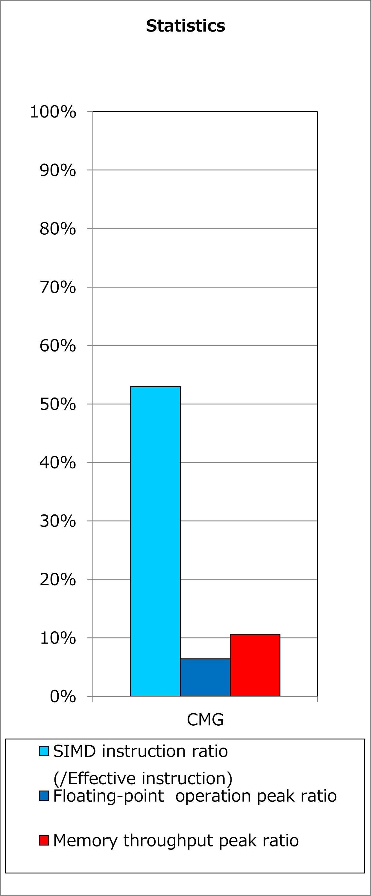
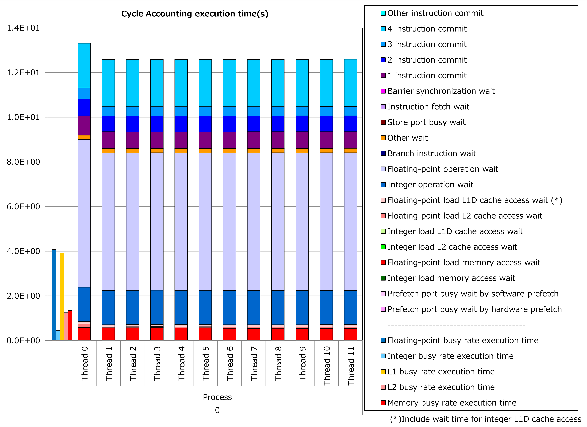
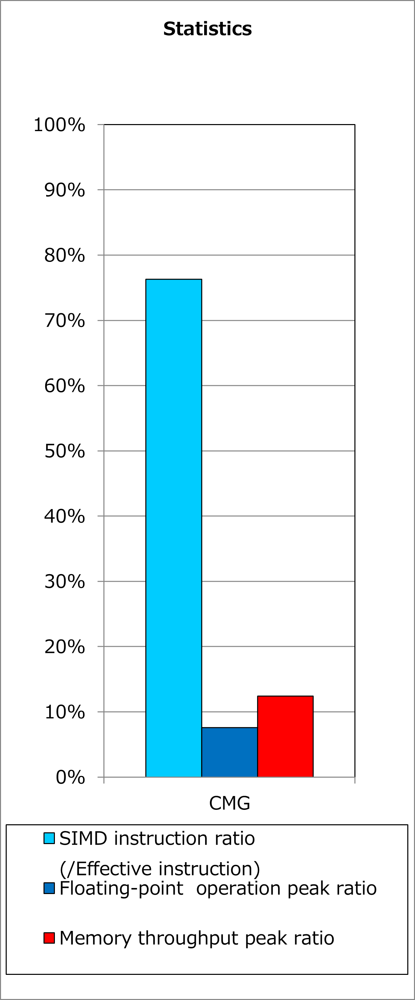
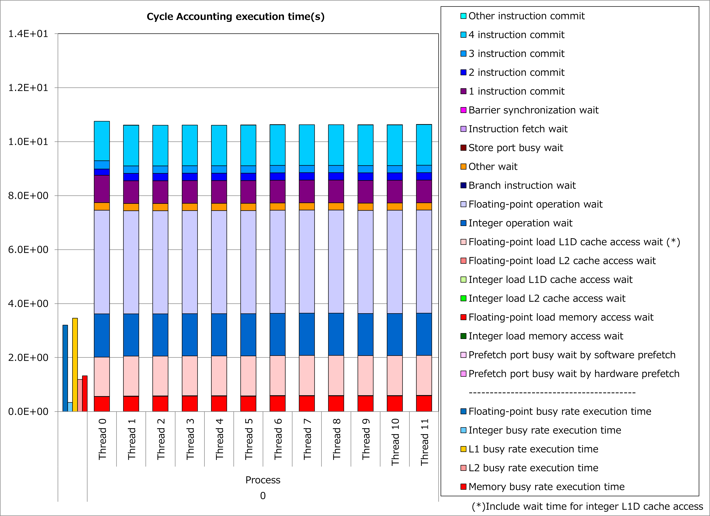

2.3. 不完全入れ子ループのループ分割¶
2.3.1. 動機¶
富士通Fortran/C/C++コンパイラは最内ループをSIMD化します。 そのため、完全入れ子のループではない場合、すなわち多重ループにおいて最内ループより外側に実行文がある場合、最内ループ以外の演算はSIMD化されず、逐次的に実行されます。
完全入れ子ループ¶
DO j = 1, n
DO i = 1, n
y(j) = y(j) + a(i,j) * x(i)
END DO
END DO
不完全入れ子ループ¶
DO j = 1, n
DO i = 1, n
y(j) = y(j) + a(i,j) * x(i)
END DO
y(j) = y(j) / a(j,j)
END DO
ここで、最内ループ以外の演算の量が無視できない割合の場合、不完全入れ子ループをループ分割し複数の完全入れ子ループとすることによって、 SIMD化される演算の割合を向上 できるケースがあります。
ループ分割後¶
DO j = 1, n
DO i = 1, n
y(j) = y(j) + a(i,j) * x(i)
END DO
END DO
DO j = 1, n
y(j) = y(j) / a(j,j)
END DO
その結果、より多くの演算が同時に実行されて、実行時間を短縮できる可能性があります。
2.3.2. 適用例¶
A64FX向けチューニング技術検討会 で示されたコード例を用いて、性能改善の例を以下に示します。 この例では、不完全入れ子である変数iのforループを、変数mのforループを含む部分とその他の部分にループ分割しています。
改善前¶
for(int k = 0; k < p_Nq; ++k) {
for(int j = 0; j < p_Nq; ++j) {
for(int i = 0; i < p_Nq; ++i) {
const int gbase
= element * p_Nggeo * p_Np + k * p_Nq * p_Nq + j * p_Nq + i;
const double r_G00 = ggeo[gbase + p_G00ID * p_Np];
const double r_G01 = ggeo[gbase + p_G01ID * p_Np];
const double r_G11 = ggeo[gbase + p_G11ID * p_Np];
const double r_G12 = ggeo[gbase + p_G12ID * p_Np];
const double r_G02 = ggeo[gbase + p_G02ID * p_Np];
const double r_G22 = ggeo[gbase + p_G22ID * p_Np];
double qr = 0.f;
double qs = 0.f;
double qt = 0.f;
for(int m = 0; m < p_Nq; m++) {
qr += s_D[i][m] * s_q[k][j][m];
qs += s_D[j][m] * s_q[k][m][i];
qt += s_D[k][m] * s_q[m][j][i];
}
s_Gqr[k][j][i] = r_G00 * qr + r_G01 * qs + r_G02 * qt;
s_Gqs[k][j][i] = r_G01 * qr + r_G11 * qs + r_G12 * qt;
s_Gqt[k][j][i] = r_G02 * qr + r_G12 * qs + r_G22 * qt;
}
}
}
改善後¶
double qr[p_Nq];
double qs[p_Nq];
double qt[p_Nq];
for(int k = 0; k < p_Nq; ++k) {
for(int j = 0; j < p_Nq; ++j) {
for(int i = 0; i < p_Nq; ++i) {
qr[i] = 0.f;
qs[i] = 0.f;
qt[i] = 0.f;
for(int m = 0; m < p_Nq; m++) {
qr[i] += s_D[i][m] * s_q[k][j][m];
qs[i] += s_D[j][m] * s_q[k][m][i];
qt[i] += s_D[k][m] * s_q[m][j][i];
}
}
#pragma loop norecurrence
for(int i = 0; i < p_Nq; ++i) {
const int gbase
= element * p_Nggeo * p_Np + k * p_Nq * p_Nq + j * p_Nq + i;
const double r_G00 = ggeo[gbase + p_G00ID * p_Np];
const double r_G01 = ggeo[gbase + p_G01ID * p_Np];
const double r_G11 = ggeo[gbase + p_G11ID * p_Np];
const double r_G12 = ggeo[gbase + p_G12ID * p_Np];
const double r_G02 = ggeo[gbase + p_G02ID * p_Np];
const double r_G22 = ggeo[gbase + p_G22ID * p_Np];
s_Gqr[k][j][i] = r_G00 * qr[i] + r_G01 * qs[i] + r_G02 * qt[i];
s_Gqs[k][j][i] = r_G01 * qr[i] + r_G11 * qs[i] + r_G12 * qt[i];
s_Gqt[k][j][i] = r_G02 * qr[i] + r_G12 * qs[i] + r_G22 * qt[i];
}
}
}
改善前および改善後コードのSIMD命令率とサイクルアカウンティング測定結果を下記グラフに示します。 なお、性能測定条件は以下のとおりです。
p_Nq = 8
改善前(上段のグラフ)に対して改善後(下段のグラフ)の測定結果では、SIMD命令率が53%から76%に改善し、実行時間が16%減ったことが分かります。
   {kind=link}
{kind=link}
{kind=link}
{kind=link}
2.3.3. 実例¶
A64FX向けチューニング技術検討会 にて、この種の事例が以下のとおり紹介されています。